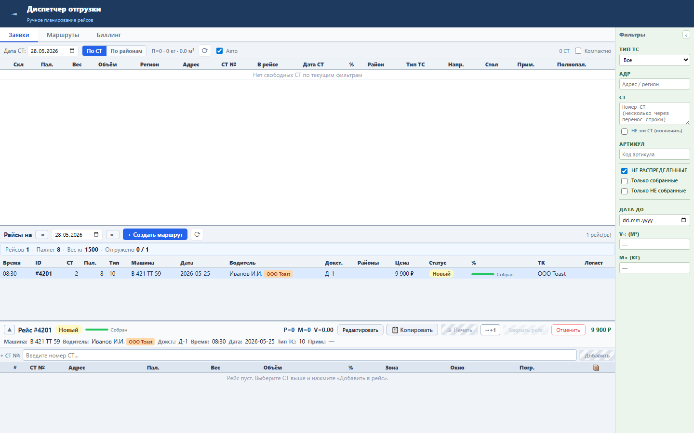
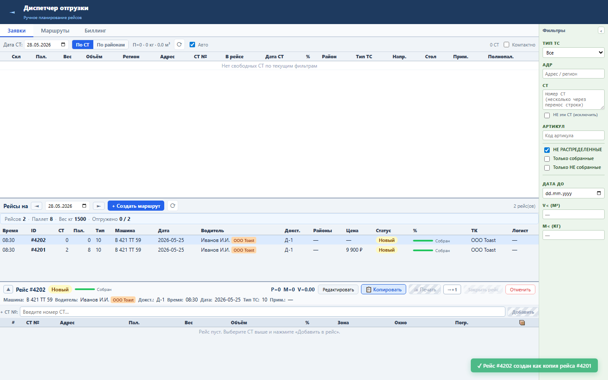
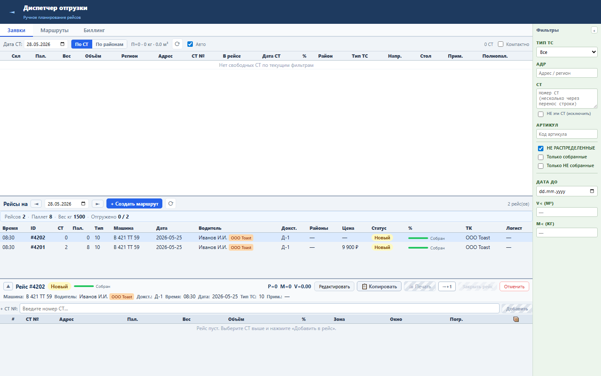

Блок даёт диспетчеру явное подтверждение успешной операции: создание, закрытие, отмена, назначение, снятие СТ или копирование рейса.
Toast хранится в клиентском состоянии toastMsg. Успешные handlers вызывают showToast(), сообщение исчезает по таймеру или по клику.
После успешного действия появляется зелёное уведомление в правом нижнем углу, а пользователь не остаётся в тишине после операции.



Проверка: functional, UI smoke и load gate пройдены.